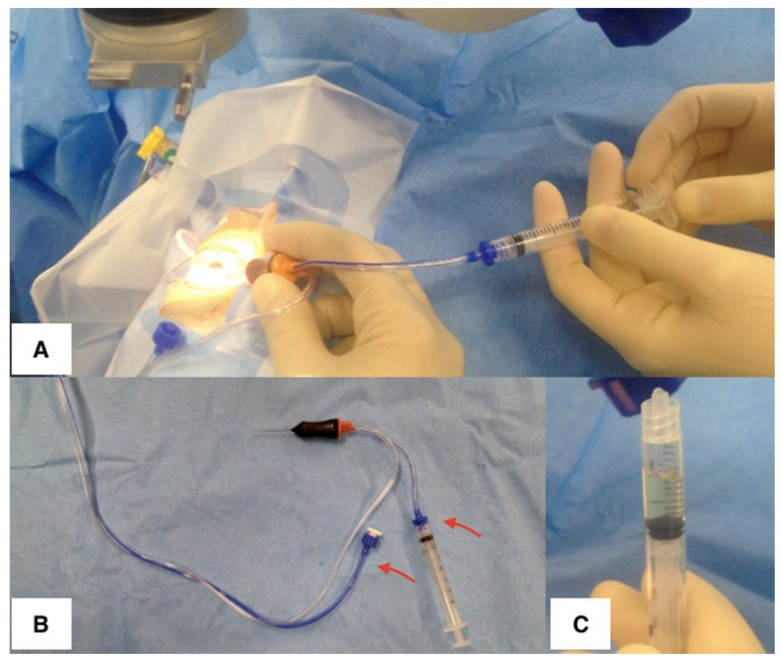
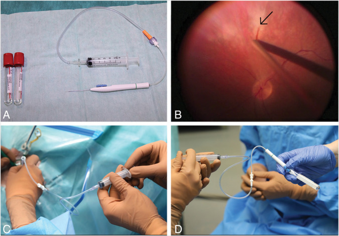
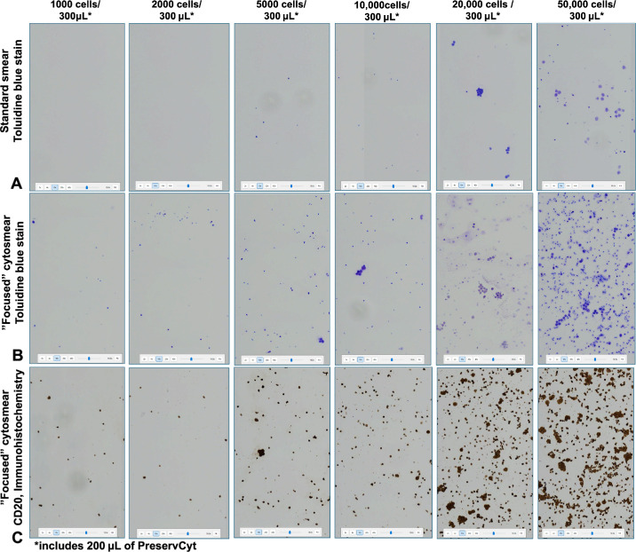
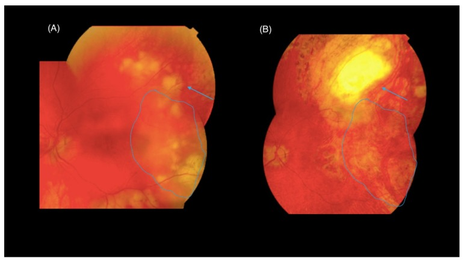
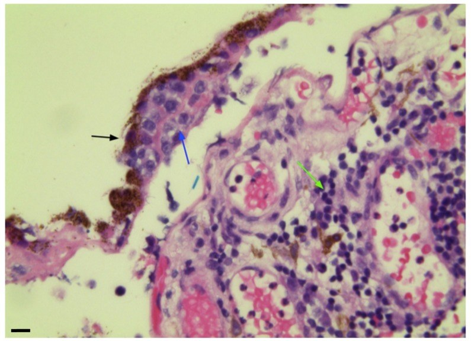

492 — Sinh thiết hắc–võng mạc & quy trình lấy mẫu dịch kính: kỹ thuật, xử lý mẫu, độ nhạy / Vitreous and chorioretinal biopsy — technique, specimen handling, diagnostic yield
Tags: pattern:it-te-bao vung:dich-kinh vung:hac-vong-mac protocol:PPV-chan-doan protocol:sinh-thiet-hac-vong-mac protocol:cytology-cell-block score:IL-10-IL-6
Mức chắc chắn (certainty): tổng hợp y văn (literature synthesis) — nhóm tự biên từ y văn mở (J Clin Med 2019 CC BY 4.0; Transl Vis Sci Technol 2025 CC BY-NC-ND 4.0; Transl Vis Sci Technol 2026 CC BY 4.0; J Clin Med 2026 CC BY 4.0; Retina 2024 CC BY-NC-ND 4.0), chưa gắn một ca nguyên văn xuyên suốt.
Vì sao bài này quan trọng: bài 462 nói phải sinh thiết dịch kính; bài 491 nói phải sinh thiết lại khi tái phát. Nhưng câu hỏi thực hành là: lấy bao nhiêu? bằng kim bao nhiêu G? cho vào ống gì? gửi đi đâu? và khi nào phải mổ lấy mảnh hắc–võng mạc? Đây là bài quy trình — và là nơi dễ mất chẩn đoán nhất: tế bào lympho trong dịch kính mỏng manh, dễ ly giải, tế bào học thường âm tính giả 30–45%, độ nhạy tế bào học dịch kính chỉ 25–44,5%. Nghĩa là kỹ thuật lấy mẫu quyết định chẩn đoán không kém gì mô bệnh học.
1. Tổng quan — vì sao mẫu nội nhãn "nghèo tế bào" và ngưỡng nào phải nhớ
- Bệnh học – sinh lý bệnh: dịch kính là gel trong suốt, gần như không có tế bào; khi có u lympho, tế bào u rơi vào dịch kính nhưng không sống dai — DLBCL là tế bào lớn, dễ apoptosis, dễ vỡ khi bị cắt/hút. Vì vậy cùng một bệnh, mẫu lấy đúng cho hàng nghìn tế bào, mẫu lấy sai cho vài chục tế bào — đủ hay không đủ để chẩn đoán.
- TẠI SAO (vật lý của "cô đặc mẫu"): nồng độ tế bào trong dịch kính thấp (cỡ 10³–10⁵ tế bào/mL trong u), nên ly tâm là bước biến "mẫu không đọc được" thành "mẫu đọc được": ly tâm 500 × g trong 5 phút, dàn tế bào vào vòng 1000 tế bào/100 µL trên lam tích điện. Kết quả thực nghiệm: ở nồng độ 1000–2000 tế bào/100 µL, lam nhuộm thường KHÔNG phát hiện được tế bào, còn lam cô đặc thì thấy rõ — và lượng DNA thu được 5,25 ng (1.000 tế bào) đến 143 ng (50.000 tế bào), đủ cho PCR MYD88 (chỉ cần ~4 tế bào).
- TẠI SAO (pha loãng = sai số định lượng): cytokine (IL-10, IL-6) và qPCR là phép đo nồng độ; nếu mẫu bị dịch truyền (BSS) pha loãng, nồng độ đo được thấp giả tạo — mẫu "dịch kính pha loãng" không dùng được cho cytokine. Vì vậy mọi xét nghiệm định lượng phải lấy từ mẫu nguyên chất (neat/undiluted) trước khi bật dịch truyền.
- Ngưỡng định lượng phải nhớ (4 cửa Argon):
| Chỉ số | Con số | Nguồn |
|---|---|---|
| Thể tích mẫu nguyên chất lấy được qua vitrectomy | 0,5–1,0 mL thường quy, tối đa ~2 mL | J Clin Med 2019 (PMC6832563) |
| "Dry tap" trước khi bật dịch truyền | ~1 mL dịch kính không pha loãng | J Clin Med 2026 (PMC13027321) |
| Độ nhạy tế bào học dịch kính (đơn thuần) | 25,0–44,5%; một số nguồn 45–81% | J Clin Med 2026 (PMC13027321); bài 462 |
| Độ nhạy của vitrectomy chẩn đoán | 77% (độ đặc hiệu 73%) | TVST 2026 (PMC12859710) |
| Âm tính giả của tế bào học không qua PPV | 30–45% | TVST 2026 (PMC12859710) |
| Cỡ kim: ảnh hưởng sống sót tế bào u lympho | 27G thấp hơn có ý nghĩa (Kendall τ = −0,253, P = 0,00048); khuyến cáo 23G và 25G | TVST 2026 (PMC12859710) |
| Tốc độ cắt 1500 vs 5000 cắt/phút | Không khác biệt về sống sót tế bào | TVST 2026 (PMC12859710) |
| Nộp thêm toàn bộ dịch trong cassette | Tế bào học 75% → 92% | J Clin Med 2026 (PMC13027321) |
| Ly tâm cô đặc lam tế bào | 500 × g, 5 phút, vòng 1000 tế bào/100 µL; DNA 5,25–143 ng | TVST 2025 (PMC12637000) |
| Kim 41G silicone lấy mảnh võng mạc | Chẩn đoán 6/7 ca; võng mạc mỏng tới 231 µm; không biến chứng nặng | Retina 2024 (PMC11332377) |
| PCR sau vi phẫu bằng laser (LCM) | Độ nhạy ~60% → gần 100% | J Clin Med 2019 (PMC6832563) |
| Ngưỡng IL-10 | dịch tiền phòng > 50 pg/mL; dịch kính > 400 pg/mL; IL-10:IL-6 > 1 | bài 462 (PMC12047895) |
2. Mẫu hình + chẩn đoán phân biệt theo vị trí (gamut)
Nguyên tắc chọn đường lấy mẫu: lấy mẫu ở ĐÚNG khoang chứa tổn thương, với thể tích lớn nhất có thể, và chia mẫu cho nhiều kỹ thuật ngay từ đầu.
Gamut theo khoang tổn thương:
- Tiền phòng (anterior chamber): chọc hút ~0,1 mL dịch tiền phòng bằng kim 30G — dùng cho IL-10 (ngưỡng 50 pg/mL), Goldmann–Witmer coefficient, PCR; an toàn, biến chứng thấp (chảy máu tiền phòng hay gặp hơn khi nhãn áp cao).
- Dịch kính (vitreous): chọc hút dịch kính (vitreous tap) kim 25/27G — nhanh, ít xâm lấn, nhưng thể tích nhỏ, dễ pha loãng, dễ âm tính; cắt dịch kính chẩn đoán (diagnostic pars plana vitrectomy, PPV) — lấy mẫu nguyên chất + toàn bộ cassette, độ nhạy cao nhất, vừa chẩn đoán vừa điều trị (làm sạch dịch kính).
- Dưới RPE / võng mạc / hắc mạc (sub-RPE, retina, choroid): tổn thương khu trú, dịch kính trong → sinh thiết hắc–võng mạc (chorioretinal biopsy) hoặc FNAB võng mạc 41G silicone — đây là nơi PVRL hay trú nhất (khoang dưới RPE).
- Mô tiền phòng/mống mắt/thể mi (iris, ciliary body): FNAB 22–27G qua giác mạc, hoặc cắt mống mắt; mô rất mỏng manh, chuyển ngay.
- Không lấy được mô: metagenomic deep sequencing (MDS) trên mẫu dịch kính ít tế bào — vừa tìm tác nhân nhiễm, vừa phát hiện đột biến/genrearrangement.
Gamut của "mẫu âm dù bệnh thật" (vì sao âm tính giả):
- Quá ít tế bào (mẫu < vài trăm tế bào) — lấy bằng tap thay vì PPV.
- Tế bào đã ly giải — chậm chuyển mẫu, không cố định đúng, kim nhỏ (27G), cắt tốc độ cao.
- Corticoid trước sinh thiết — tế bào u thoái triển, mô chỉ còn viêm.
- Lấy trúng vùng hoại tử trung tâm — mảnh sinh thiết chỉ có mô chết.
- Pha loãng bởi dịch truyền — cytokine thấp giả tạo.
- Nhiễm vật liệu thủy tinh thể khi mổ phối hợp đục thể thủy tinh — dùng máy và đường hút riêng.
3. Bảng so sánh phân biệt (ma trận đối chiếu)
| Thực thể / kỹ thuật | Hình ảnh – thể tích – xử lý | Chốt vào (rule-in) | Chốt loại (rule-out) | Gợi ý xác nhận |
|---|---|---|---|---|
| Chọc hút dịch tiền phòng (AC tap) | ~0,1 mL, kim 30G; đo IL-10/IL-6, GWC, PCR | Cần cytokine/kháng thể mà không muốn mổ; IL-10 tiền phòng > 50 pg/mL | Cần mô học/tế bào học → không đủ | IL-10, IL-6, PCR; an toàn, biến chứng thấp |
| Chọc hút dịch kính (vitreous tap) | Kim 25/27G, thể tích nhỏ, dễ pha loãng | Ca không mổ được / cần cấy nhanh | Nghi u lympho → 27G làm giảm sống sót tế bào | Cấy, PCR; nếu âm mà còn nghi → PPV |
| Cắt dịch kính chẩn đoán (diagnostic PPV) | 23G/25G; 0,5–1,0 mL nguyên chất trước infusion + toàn bộ cassette | Nghi PVRL/masquerade — độ nhạy 77%, nộp cassette đưa tế bào học lên 92% | Tổn thương chỉ ở hắc mạc, dịch kính trong → PPV một mình dễ âm | Tế bào học + cell block + flow + IgH/MYD88 + IL-10 |
| FNAB võng mạc 41G silicone | Kim 41G mềm, hút qua ống nối; lấy được mảnh võng mạc dày 231 µm | Tổn thương dưới võng mạc nhỏ, dịch kính trong; 6/7 ca chẩn đoán được, nhiều ca trước đó PPV âm | Tổn thương lớn cần mô học đầy đủ → chọn sinh thiết toàn lớp | Tế bào học + flow; không biến chứng nặng trong loạt 7 ca |
| Sinh thiết hắc–võng mạc toàn lớp (transvitreal) | Cắt vùng ranh giới tổn thương–lành, đốt mạch, laser giới hạn, cắt tới củng mạc, gas/silicone | Thất bại nhiều lần với dịch kính; tổn thương hắc mạc/võng mạc đơn thuần | Bệnh toàn thân chưa loại trừ → ưu tiên sinh thiết ngoài mắt | Mô học + IHC + PCR/LCM; biến chứng cao nhất trong các kiểu sinh thiết |
| Sinh thiết qua củng mạc (transscleral) | Vạt củng mạc ~6 × 6 mm, đốt mép hắc mạc, khâu 7-O Vicryl | Tổn thương trước xích đạo/gần ora | Tổn thương sau cực → khó tiếp cận | Mô học; nguy cơ xuất huyết trên hắc mạc |

(A) Trợ thủ hút bằng tay qua syringe trong khi phẫu thuật viên cắt bằng vitrector; (B) đầu cắt có ống hút bị ngắt (mũi tên đỏ) nối trực tiếp vào syringe 2 mL; (C) mẫu dịch kính nguyên chất thu được. Đây là cách lấy 0,5–1,0 mL (tối đa ~2 mL) không pha loãng — điều kiện bắt buộc để đo IL-10/IL-6 và qPCR chính xác. Nguồn: Mastropasqua R et al., J Clin Med 2019 (PMC6832563) Fig. 5, CC BY 4.0.4. Protocol lấy mẫu – xử lý – gửi xét nghiệm
Bước 0 — Chuẩn bị (quyết định trước khi vào phòng mổ):
- Xác định khoang tổn thương trên OCT/FAF/siêu âm → chọn đường lấy mẫu (mục 2).
- Ngừng/giảm corticoid nếu an toàn, tối thiểu vài ngày trước lấy mẫu (corticoid làm tế bào ly giải/thoái triển).
- Đặt sẵn bộ ống: ống khô cho cytokine (không heparin, không môi trường), ống PreservCyt cho tế bào học, ống cho PCR (EDTA), ống cấy.
- Ghi tên xét nghiệm trên từng ống trước khi bắt đầu — mẫu ít không chia lại được.
Bước 1 — Lấy mẫu nguyên chất (neat):
- PPV 23G hoặc 25G (không chọn 27G cho ca nghi u lympho).
- Chưa bật dịch truyền: hút ~1 mL dịch kính bằng tay qua đường hút nối syringe (Hình A–C) — gọi là "dry tap".
- Giữ nhãn áp bằng ấn ngoài cầu (squint hook) trong khi hút; rút đầu cắt trong lúc vẫn cắt.
- Sau đó bật infusion, cắt dịch kính lõi/ toàn bộ, và nộp toàn bộ dịch trong cassette (chứa tế bào vỏ dịch kính — nơi tế bào lympho hay nằm).
Bước 2 — Chia mẫu (tối thiểu 4 phần nếu đủ thể tích):
| Phần | Xử lý | Xét nghiệm |
|---|---|---|
| 1 | Không cố định, chuyển ngay (đá, < 1 giờ) | Tế bào học, cell block, flow cytometry |
| 2 | Ly tâm 500 × g/5 phút → dàn vòng 1000 tế bào/100 µL | Lam cô đặc + CD20/CD79a/PAX5/Ki-67 |
| 3 | Đông lạnh / dung dịch bảo quản DNA | IgH PCR, MYD88 L265P, CD79B, NGS |
| 4 | Ống khô, ly tâm nhanh | IL-10, IL-6 (tỉ lệ > 1) |
Bước 3 — Sinh thiết hắc–võng mạc (khi dịch kính âm mà còn nghi):
- Đường transvitreal (ưu tiên): chọn ranh giới tổn thương–vùng lành (mép có nhiều tế bào sống, trung tâm thường hoại tử) → đốt mạch võng mạc → laser/diathermy giới hạn vùng hắc mạc → cắt toàn lớp bằng kéo đến củng mạc trần → lấy mảnh qua sclerotomy mở rộng → endolaser quanh chỗ lấy + gas/silicone.
- Đường transscleral: vạt củng mạc ~6 × 6 mm, đốt mép hắc mạc, lấy mảnh, khâu 7-O Vicryl — dùng cho tổn thương trước xích đạo.
- FNAB võng mạc 41G silicone: kim mềm, hút qua ống nối 12–18 inch (tránh rung tay), vào qua pars plana dưới quan sát trực tiếp; phù hợp tổn thương nhỏ, dưới võng mạc.

(A) Bộ dụng cụ: kim 41G silicone mềm nối ống, syringe 5 mL và ống nghiệm; (B) đầu kim (mũi tên) tiếp cận tổn thương dưới võng mạc dưới quan sát trực tiếp; (C–D) hút bằng tay qua ống nối. Trong loạt 7 ca, kỹ thuật này chẩn đoán 6/7, lấy được mô võng mạc mỏng tới 231 µm, và 4/5 ca trước đó đã có tế bào học dịch kính âm. Nguồn: Globočnik Petrovič M et al., Retina 2024 (PMC11332377) Fig. 2, CC BY-NC-ND 4.0 — giữ nguyên bản.Bước 4 — Xử lý mô & chất lượng:
- Mảnh mô chia 3: formalin (mô học), OCT/frozen (hóa mô miễn dịch + phân tử), môi trường cấy (nếu nghi nhiễm).
- Nếu tế bào u lẫn nhiều tế bào viêm/hoại tử → laser capture microdissection (LCM) để tách tế bào u: độ nhạy PCR từ ~60% lên gần 100%.

Cùng mẫu DLBCL pha loãng: (A) lam nhuộm thường — rất ít/không thấy tế bào; (B) lam cô đặc bằng ly tâm — tế bào tập trung thành vòng, đếm được; (C) CD20 dương trên lam cô đặc, không mất tế bào. Đây là lý do bước ly tâm 500 × g/5 phút không được bỏ. Nguồn: Ho CEH et al., Transl Vis Sci Technol 2025 (PMC12637000) Fig. 2, CC BY-NC-ND 4.0 — giữ nguyên bản.flowchart TD
A[Nghi u lympho noi nhan hoac viem man khong ro nguyen nhan] --> B[OCT + FAF + sieu am B-scan: xac dinh KHOANG ton thuong]
B --> C{Ton thuong o dau?}
C -->|Chi tien phong| D[Choc hut tien phong 30G: IL-10, GWC, PCR]
C -->|Dich kinh| E[PPV 23G hoac 25G: dry tap 1 mL nguyen chat + toan bo cassette]
C -->|Duoi RPE, vong mac, hac mac| F[Dich kinh trong: FNAB 41G silicone hoac sinh thiet hac-vong mac]
D --> G[Chia mau: te bao hoc, cell block, flow, IgH/MYD88, IL-10]
E --> G
F --> G
G --> H{Ket qua du chan doan?}
H -->|Co| I[Chan doan xac dinh - hoi chan dieu tri]
H -->|Khong| J{Da loai tru loi ky thuat?}
J -->|Chua| K[Kiem tra the tich, do tre, co kim, pha loang, corticoid truoc do]
K --> E
J -->|Roi| L[Sinh thiet lai hoac sinh thiet hac-vong mac toan lop + LCM]
L --> I
5. Biến thể bình thường và cạm bẫy
- Cạm bẫy 1 — dùng mẫu pha loãng để đo cytokine: BSS làm IL-10 thấp giả tạo → bỏ sót u lympho. Quy tắc: mẫu nguyên chất cho mọi xét nghiệm định lượng, mẫu cassette chỉ dùng cho tế bào học/flow.
- Cạm bẫy 2 — chọn 27G vì "nhỏ thì an toàn hơn": với tế bào u lympho, 27G làm giảm sống sót tế bào có ý nghĩa (τ = −0,253; P = 0,00048). Khuyến cáo 23G/25G; tốc độ cắt 1500 hay 5000 cắt/phút không ảnh hưởng — nên đừng hy sinh độ nhạy để "cắt chậm cho an toàn", niềm tin cũ "không quá 600 cắt/phút" không còn giá trị với đầu cắt hiện đại.
- Cạm bẫy 3 — chỉ lấy "lõi" dịch kính rồi dừng: tế bào lympho tập trung ở vỏ dịch kính (cortical vitreous); cắt lõi đơn thuần dễ âm. Nên cắt toàn bộ + nộp cassette (tế bào học 75% → 92%).
- Cạm bẫy 4 — lấy trúng trung tâm tổn thương: trung tâm thường hoại tử, không có tế bào sống → mô học "không kết luận". Chọn ranh giới tổn thương–lành, và với tổn thương dưới RPE thì lấy sâu, gần choriocapillaris.
- Cạm bẫy 5 — mổ phối hợp đục thể thủy tinh làm nhiễm mảnh vụn thể thủy tinh: dùng máy và đường hút riêng cho thì lấy mẫu, tránh mảnh vụn thủy tinh thể làm nhiễu tế bào học/phân tử.
- Cạm bẫy 6 — tế bào học âm là "hết chuyện": âm tính giả 30–45%; độ nhạy PPV chỉ 77%, đặc hiệu 73%. Luôn gửi song song cytokine + phân tử, và sinh thiết lại khi còn nghi (giá trị tăng theo số lần).
- Cạm bẫy 7 — "sinh thiết hắc–võng mạc là thủ thuật nhẹ": đây là kiểu sinh thiết nội nhãn nguy cơ cao nhất: đục thể thủy tinh, bong võng mạc, xuất huyết dịch kính, xuất huyết hắc mạc, PVR, viêm nội nhãn; hiếm hơn là tế bào u lan ra củng mạc qua đường mở (port-site extension). Chỉ định phải rõ: thất bại lấy mẫu dịch kính nhiều lần, hoặc tổn thương chỉ ở hắc–võng mạc.
- Cạm bẫy 8 — bỏ qua thời gian vận chuyển: tế bào thoái hóa nhanh nếu không cố định/không vào môi trường nuôi cấy; chuyển ngay trong giờ, không qua trung gian.

*(A) Trước: thâm nhiễm vàng lan tỏa nghi u lympho (đường xanh = ranh giới tổn thương). (B) Ba tháng sau sinh thiết, mắt đầy dầu silicone: vị trí lấy mảnh (mũi tên) và tổn thương thoái triển sau một đợt hóa trị — mảnh mô chẩn đoán được "large B-cell lymphoma". Nguồn: Mastropasqua R et al., J Clin Med 2019 (PMC6832563) Fig. 8, CC BY 4.0.*6. Tự lượng giá — Blind Quiz
Ca 1 — Bác sĩ trợ thủ đang hút dịch kính trong lúc phẫu thuật viên cắt. Quan sát 3 ô ảnh:
- Câu hỏi: vì sao phải hút trước khi bật dịch truyền? Ưu điểm của mẫu này so với chọc hút dịch kính bằng kim? Lấy được bao nhiêu?
Bấm để hiện đáp án (findings + chẩn đoán)
- Dấu hiệu (findings): (A) hút bằng tay qua syringe trong khi vitrector vẫn cắt; (B) ống hút bị ngắt nối trực tiếp syringe 2 mL — mẫu không đi qua bộ phận bơm/dịch truyền; (C) mẫu dịch kính nguyên chất đục, thể tích 0,5–1,0 mL (tối đa ~2 mL).
- Chẩn đoán/ý nghĩa: đây là cách lấy mẫu không pha loãng — bắt buộc cho IL-10/IL-6 và qPCR (mẫu pha loãng cho kết quả thấp giả tạo). So với chọc hút bằng kim: thể tích lớn hơn, nhiều tế bào hơn, ít âm tính giả hơn, và có thêm tác dụng điều trị (làm sạch dịch kính).
- Nguồn ảnh: Mastropasqua R et al., J Clin Med 2019 (PMC6832563) Fig. 5, CC BY 4.0.
Ca 2 — Bệnh nhân có thâm nhiễm vàng lan tỏa nghi u lympho, dịch kính tương đối trong. Ảnh trước và 3 tháng sau sinh thiết hắc–võng mạc:
- Câu hỏi: vì sao chọn sinh thiết hắc–võng mạc thay vì chỉ cắt dịch kính? Lấy ở đâu trong tổn thương? Vì sao ảnh B có dầu silicone?
Bấm để hiện đáp án (findings + chẩn đoán)
- Dấu hiệu (findings): (A) mảng thâm nhiễm vàng nhạt lan tỏa ở cực sau, nghi u lympho; (B) sau sinh thiết — mắt đầy dầu silicone, vị trí lấy mảnh (mũi tên) đã đóng, tổn thương thoái triển sau hóa trị.
- Chẩn đoán (diagnosis): u lympho tế bào B lớn — mảnh sinh thiết hắc–võng mạc chẩn đoán xác định trong khi tổn thương chỉ nằm dưới RPE/võng mạc.
- Kỹ thuật: lấy ở ranh giới tổn thương–vùng lành (trung tâm hoại tử dễ "không kết luận"), sâu tới gần choriocapillaris; sau đó endolaser + dầu silicone/gas để chống bong võng mạc và chảy máu.
- Nguồn ảnh: Mastropasqua R et al., J Clin Med 2019 (PMC6832563) Fig. 8, CC BY 4.0.
Ca 3 — Mảnh sinh thiết hắc–võng mạc của bệnh nhân 68 tuổi, H&E:

- Câu hỏi: tế bào u nằm ở khoang nào? Vì sao đây là vị trí "vàng" để sinh thiết? Vì sao đôi khi vẫn cần laser capture microdissection?
Bấm để hiện đáp án (findings + chẩn đoán)
- Dấu hiệu (findings): tế bào lympho đa hình thái (mũi tên xanh) nằm giữa biểu mô sắc tố (mũi tên đen) và hắc mạc bên dưới; hắc mạc có thâm nhiễm lympho phản ứng nhỏ (mũi tên xanh lá).
- Vì sao: PVRL homing về khoang dưới RPE → sinh thiết hắc–võng mạc có tỷ lệ chẩn đoán cao; nhưng tế bào u thường lẫn tế bào viêm và mô hoại tử, làm DNA bẩn → PCR không tin cậy.
- Giải pháp: LCM tách riêng tế bào u khỏi mô viêm → độ nhạy PCR từ ~60% lên gần 100%.
- Nguồn ảnh: Mastropasqua R et al., J Clin Med 2019 (PMC6832563) Fig. 6, CC BY 4.0.
Bài liên quan chéo
- 462 – U lympho nội nhãn (PVRL) vs viêm màng bồ đào giả danh
- 491 – Theo dõi & tái phát PVRL
- 411 – Siêu âm nhãn cầu (định hướng khi không thấy đáy mắt)
- 452 – Hoại tử võng mạc cấp (ARN) & CMV retinitis (PCR dịch kính/tiền phòng)
- 463 – Viêm nội nhãn nội sinh do nấm (cấy & PCR dịch kính)
- 460 – Can thiệp mắt
- 400 – Tổng quan Mắt & thị giác
Ảnh
492_lay-dich-kinh-khong-pha-loang_PMC6832563-Fig5-CCBY.jpg— Mastropasqua R et al., J Clin Med 2019 (PMCID: PMC6832563) Fig. 5, CC BY 4.0.492_sinh-thiet-hac-vong-mac_PMC6832563-Fig8-CCBY.jpg— Mastropasqua R et al. (PMC6832563) Fig. 8, CC BY 4.0.492_te-bao-duoi-RPE_PMC6832563-Fig6-CCBY.jpg— Mastropasqua R et al. (PMC6832563) Fig. 6, CC BY 4.0.492_S-FNAB-41G_PMC11332377-Fig2-CCBYNCND.jpg— Globočnik Petrovič M et al., Retina 2024 (PMCID: PMC11332377) Fig. 2, CC BY-NC-ND 4.0 (giữ nguyên bản) — kỹ thuật FNAB võng mạc 41G.492_cytosmear-ly-tam_PMC12637000-Fig2-CCBYNCND.jpg— Ho CEH et al., Transl Vis Sci Technol 2025 (PMCID: PMC12637000) Fig. 2, CC BY-NC-ND 4.0 (giữ nguyên bản) — lam thường vs lam cô đặc.- Chi tiết giấy phép từng ảnh trong
images/CREDITS.md. AuntMinnie / Retina Image Bank: chỉ dẫn link, không tải.
Không dùng để chẩn đoán độc lập khi chưa có người hướng dẫn.